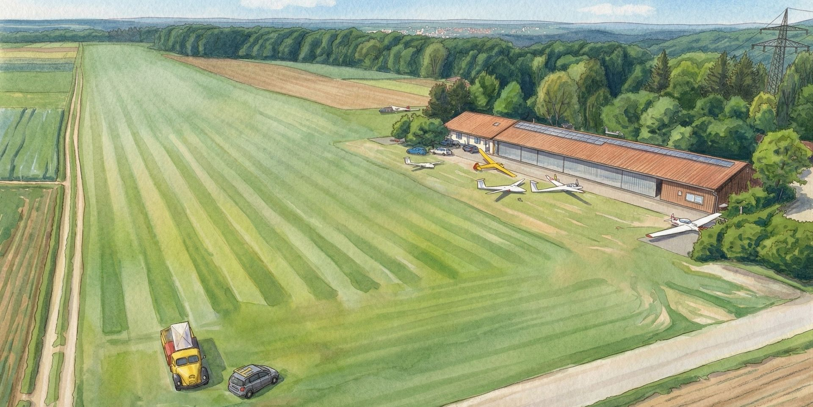
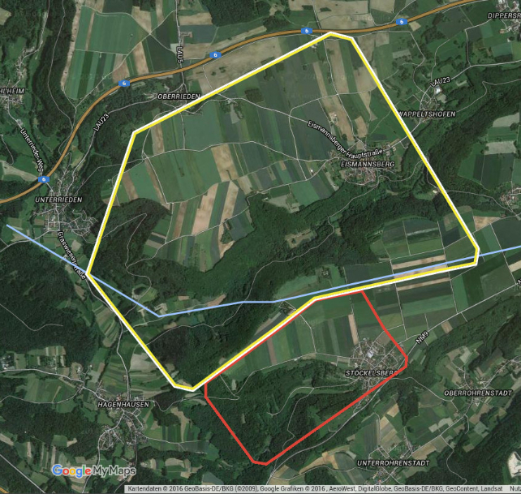

Willkommen auf dem Segelflugplatz Altdorf-Hagenhausen
Since 1966
Wir besitzen eine Gras-Landebahn, die etwa 1km lang und 50m breit ist, zwei Hallen und eine Kantine, voll erschlossen mit Strom, Wasser und sanitären Anlagen. Die wunderschöne Umgebung lädt außerdem zu ausgiebigen Wanderungen oder Radtouren ein.
Erreichbarkeit: Telefonisch ist der Flugplatz zu den Betriebszeiten (meist März bis Oktober, Samstag und Sonntag) unter 09189-310 erreichbar.

So findest du uns
🚗 Mit dem Auto
Fahre auf der A3 in südlicher Richtung Regensburg. Die erste Ausfahrt nach dem Kreuz Altdorf (Oberölsbach) nehmen. Nach der Ausfahrt rechts abbiegen. Nach 200m kommt ein Kreisverkehr und ab da der Beschilderung "Flugplatz" folgen.
Navigationssysteme kennen normalerweise den Flugplatz Altdorf-Hagenhausen als Sonderziel. Wenn nicht führt die Adresse "Hagenhausener Str in 92348 Berg" nahe ans Ziel; Wegweiser Flugplatz führen dann direkt zu uns.
✈️ Für Piloten (PPR)
Der Flugplatz liegt ca. 16 nM SE Nürnberg, oder 5 nM ESE Autobahnkreuz Altdorf.
Daten
- GPS Koordinaten: N49 23 13 / E11 25 19
- Frequenz: 129,975
- Zulassung: Segelflugzeuge, Motorsegler und UL (PPR!)
- Treibstoff: nur MoGAS in kleinen Mengen
Piste
- Landerichtung: 05/23 Gras
- Länge: 550m, TORA 900m
- Platzrunde Motor: 2.500 ft, nördlich der Piste
- Keine Ortschaften überfliegen!
Anflugkarte

● Gelb: Platzrunde Motor
● Rot: Platzrunde Segel
● Blau: Hochspannungsleitung
⚠️ Zusatzinformationen & Warnhinweise
- Hochspannungsleitung östlich der Piste beachten!
- Bei Ostwind-Lagen oft starkes Lee bei Landung 05!
- Buschgruppe ca. 50m vor der Schwelle Piste 05.
- Modellflugplatz südlich des Gegenanfluges der Motor-Platzrunde - nicht unter 2.500 MSL und nicht näher an die Piste heran fliegen!
- Flugzeuge mit laufendem Motor vermeiden es bitte strikt, die Ortschaften zu überfliegen.